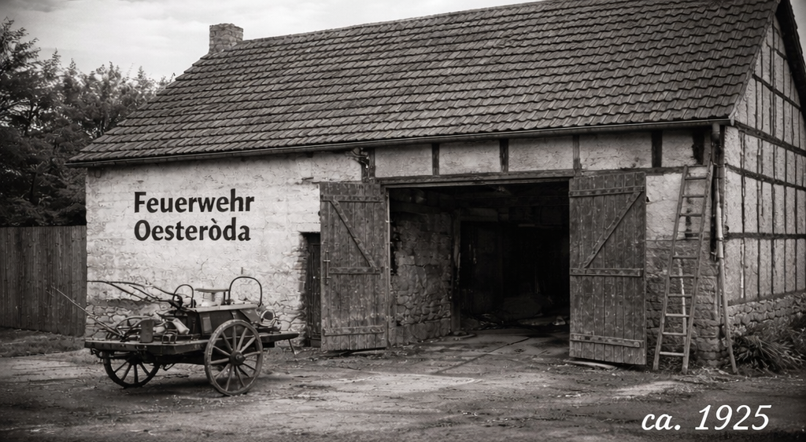
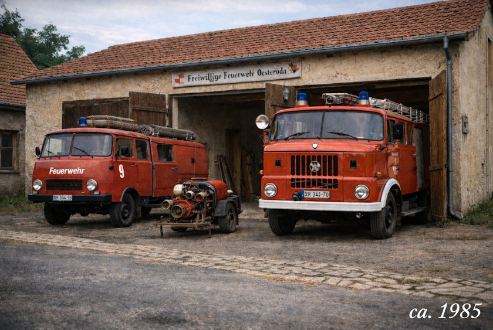

Die Freiwillige Feuerwehr Oesteröda wurde im Jahr 1925 gegründet und steht seitdem im Dienst der Sicherheit der Bürgerinnen und Bürger unserer Gemeinde. Was einst mit einfacher Ausrüstung und großem Engagement begann, hat sich über die Jahrzehnte zu einer leistungsfähigen und modern ausgestatteten Einsatzabteilung entwickelt.
In den Anfangsjahren verfügte die Wehr über eine handgezogene Tragkraftspritze und war zunächst in einem kleinen Gerätehaus untergebracht, das sich in einem umgebauten landwirtschaftlichen Nebengebäude im Ortskern befand. Dieses bot nur Platz für ein Einsatzfahrzeug und die notwendigste Ausrüstung. Mit wachsender Aufgabenvielfalt wurde das Gerätehaus in den 1970er Jahren erweitert und bot fortan Raum für zwei Fahrzeuge.

In den folgenden Jahrzehnten wurde der Fuhrpark stetig modernisiert. Bis Mitte der 1990er Jahre standen der Feuerwehr Oesteröda unter anderem ein Tragkraftspritzenfahrzeug (TSF) sowie ein Löschgruppenfahrzeug LF 8 zur Verfügung.

Ein bedeutender Schritt erfolgte im Jahr 1995 mit der Indienststellung eines LF 8/6 sowie eines SW 2000. Damit konnte die Leistungsfähigkeit insbesondere im Bereich der Brandbekämpfung und der Wasserversorgung über lange Wegstrecken deutlich gesteigert werden.
Im Jahr 2006 wurde der Fuhrpark erneut erweitert: Mit dem RW 2 erhielt die Feuerwehr ein leistungsstarkes Rettungsgerät für technische Hilfeleistungen, insbesondere bei Verkehrsunfällen. Dadurch konnte das Einsatzspektrum erheblich ausgebaut werden.
Ein weiterer Meilenstein folgte im Jahr 2019. In diesem Jahr wurde das neue, moderne Gerätehaus mit vier Stellplätzen offiziell eingeweiht. Das Gebäude bietet optimale Bedingungen für Ausbildung, Einsatzvorbereitung und Kameradschaftspflege. Zeitgleich wurde ein Mehrzweckfahrzeug (MZF) in Dienst gestellt, welches vielseitig für Transport-, Logistik- und Führungsaufgaben eingesetzt wird.
Heute steht die Feuerwehr Oesteröda für Engagement, Professionalität und Kameradschaft. Neben der Einsatzabteilung bilden eine engagierte Jugendfeuerwehr sowie fördernde Mitglieder eine starke Gemeinschaft, die sich mit Herzblut für den Schutz und die Sicherheit der Bevölkerung einsetzt.
Seit über 100 Jahren gilt bei uns: Retten – Löschen – Bergen – Schützen.